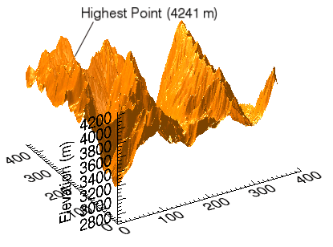
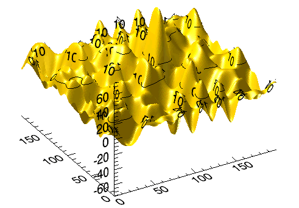
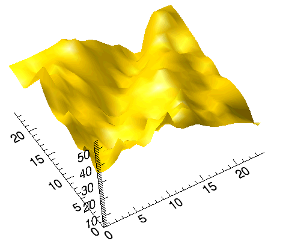

Note: Please see the SURFACE function, which replaces the functionality of this routine.
Note: If no arguments are specified, the ISURFACE procedure creates an empty Surface tool.
ISURFACE[, Z [, X , Y ]] [, BOTTOM = index or RGB vector ] [, CLIP_PLANES = array ] [, COLOR = RGB vector ] [, DEPTH_OFFSET = value ] [, / EXTENDED_LEGO ] [, / HIDDEN_LINES ] [, / HIDE ] [, INSERT_COLORBAR = value ] [, INSERT_LEGEND = value ] [, LINESTYLE = value ] [, MAX_VALUE = value ] [, MIN_VALUE = value ] [, RGB_TABLE = array ] [, SHADING ={0 | 1}] [, / SHOW_SKIRT ] [, SKIRT = Z value ] [, STYLE ={0 | 1 | 2 | 3 | 4 | 5 | 6}] [, TEXTURE_ALPHA = array ] [, TEXTURE_BLUE = array ] [, TEXTURE_GREEN = array ] [, TEXTURE_HIGHRES ={0 | 1 | 2}] [, TEXTURE_IMAGE = array ] [, / TEXTURE_INTERP ] [, TEXTURE_RED = array ] [, THICK = float {1.0 to 10.0}] [, TRANSPARENCY = value ] [, / USE_TRIANGLES ] [, VERT_COLORS = vector or array ] [, [XYZ]LOG = value ] [, ZERO_OPACITY_SKIP ={0 | 1}]
ISURFACE[, Struct ]
A vector or two-dimensional array specifying the x -coordinates of the grid.
If X is a vector:
Each element of X specifies the x -coordinates of a point in space (e.g., X [0] specifies the x -coordinate for Y [0] and Z [0]). The gridding wizard will automatically launch in this case.
Each element of X specifies the x -coordinates for a column of Z (e.g., X [0] specifies the x -coordinate for Z [0, *]).
If X is a two-dimensional array, each element of X specifies the x -coordinate of the corresponding point in Z ( X ij specifies the x-coordinate of Z ij ).
A vector or two-dimensional array specifying the y -coordinates of the grid.
If Y is a vector:
Each element of Y specifies the y -coordinates of a point in space (e.g., Y [0] specifies the y -coordinate for X [0] and Z [0]). The gridding wizard will automatically launch in this case.
Each element of Y specifies the y -coordinates for a column of Z (e.g., Y [0] specifies the y -coordinate for Z [*, 0]).
If Y is a two-dimensional array, each element of Y specifies the y -coordinate of the corresponding point in Z ( Y ij specifies the y-coordinate of Z ij ).
A vector or two-dimensional array specifying the data to be displayed.
If Z is a vector,
Each element of Z specifies the z -coordinates of a point in space (e.g., Z [0] specifies the z -coordinate for X [0] and Y [0]). The gridding wizard will automatically launch in this case.
If Z is a two-dimensional array,
The surface is defined as a function of the ( x , y ) locations specified by their contents.
The surface is generated as a function of the array indices of each element of Z .
Note: Keywords to the ISURFACE routine that correspond to the names of registered properties of the iSurface tool must be specified in full, without abbreviation.
Set this keyword to an RGB color for drawing the bottom of the surface. Set this keyword to a scalar to draw the bottom with the same color as the top.
Set this keyword to an array of dimensions [4, N ] specifying the coefficients of the clipping planes to be applied to this object. The four coefficients for each clipping plane are of the form [A, B, C, D], where A x + B y + C z + D = 0. Portions of this object that fall in the half space A x + B y + C z + D > 0 will be clipped. By default, the value of this keyword is a scalar (-1) indicating that no clipping planes are to be applied.
Note: A window is only able to support a limited number of clipping planes. Some of these clipping planes may already be in use by the tool to support specific data display features. If the total number of clipping planes exceeds the limit, an informational message is displayed.
Set this keyword to the color to be used as the foreground color for this model. The color is specified as an RGB vector. The default is [225, 184, 0].
Set this keyword to an integer value that specifies an offset in depth to be used when rendering filled primitives. This offset is applied along the viewing axis, with positive values moving the primitive away from the viewer.
The units are “Z-Buffer units,” where a value of 1 is used to specify a distance that corresponds to a single step in the device’s Z-Buffer.
Use DEPTH_OFFSET to always cause a filled primitive to be rendered slightly deeper than other primitives, independent of model transforms. This is useful for avoiding stitching artifacts caused by rendering lines or polygons on top of other polygons at the same depth.
Note: Use this feature to remove stitching artifacts—not as a means for “layering” complex scenes with multiple DEPTH_OFFSET values. It is safest to use only a DEPTH_OFFSET value of 0, the default, and one other non-zero value, such as 1. Many system-level graphics drivers are not consistent in their handling of DEPTH_OFFSET values, particularly when multiple non-zero values are used. This can lead to portability problems because a set of DEPTH_OFFSET values may produce better results on one machine than on another. Using IDL’s software renderer will help improve the cross-platform consistency of scenes that use DEPTH_OFFSET.
Note: DEPTH_OFFSET has no effect unless the value of the STYLE keyword is 2 or 6 (Filled or LegoFilled).
Set this keyword to force the iSurface tool to display the last row and column of data when lego display styles are selected.
Set this keyword to draw point and wireframe surfaces using hidden line (point) removal. By default, hidden line removal is disabled.
Set this keyword to a boolean value indicating whether this object should be drawn:
If the newly-created visualization contains a color table (as specified by the RGB_TABLE keyword) set this keyword to automatically insert a colorbar. By default the colorbar will be positioned in the bottom center of the view. To manually position the colorbar, set this keyword equal to a two-element vector with values in the range (0 to 1) specifying the location of the bottom left corner of the colorbar in normalized coordinates.
Set this keyword to insert a legend for the newly-created visualization. By default the legend will be positioned in the upper right corner of the view. To manually position the legend, set this keyword equal to a two-element vector with values in the range (0 to 1) specifying the location of the bottom left corner of the legend in normalized coordinates. If you are overplotting, and a legend already exists, then a new legend item will be inserted into the existing legend.
Set this keyword to indicate the line style that should be used to draw the surface lines. The value can be either an integer value specifying a pre-defined line style, or a two-element vector specifying a stippling pattern.
To use a pre-defined line style, set this property equal to one of the following integer values:
|
0 |
Solid line (the default) |
|
1 |
Dotted |
|
2 |
Dashed |
|
3 |
Dash dot |
|
4 |
Dash dot dot dot |
|
5 |
Long dash |
|
6 |
No line drawn |
To define your own stippling pattern, specify a two-element vector [ repeat , bitmask ], where repeat indicates the number of times consecutive runs of 1’s or 0’s in the bitmask should be repeated. (That is, if three consecutive 0’s appear in the bitmask and the value of repeat is 2, then the line that is drawn will have six consecutive bits turned off.) The value of repeat must be in the range 1 ≤ repeat ≤ 255.
The bitmask indicates which pixels are drawn and which are not along the length of the line. Bitmask is most conveniently specified as a 16-bit hexadecimal value.
For example, LINESTYLE = [2, 'F0F0'X] describes a dashed line (8 bits on, 8 bits off, 8 bits on, 8 bits off).
Set this keyword to the maximum value to be plotted. Data values greater than this value are treated as missing data. The default is the maximum value of the input Z data. IDL converts, maintains, and returns this data as double-precision floating-point.
Note: The IEEE floating-point value NaN is also treated as missing data.
Set this keyword to the minimum value to be plotted. Data values less than this value are treated as missing data. The default is the minimum value of the input Z data. IDL converts, maintains, and returns this data as double-precision floating-point.
Note: The IEEE floating-point value NaN is also treated as missing data.
Set this keyword to the number of the predefined IDL color table, or to either a 3 by 256 or 256 by 3 byte array containing RGB triplets defining the colors to be used in a color indexed texture image or by vertex colors. The values should be within the range of 0 ≤ value ≤ 255. The array must be a 3 by N array where m must not exceed 256.
Set this keyword to an integer representing the type of shading to use if STYLE is set to 2 (Filled).
Gouraud shading may be slower than flat shading, but results in a smoother appearance.
Set this keyword to enable skirt drawing. The default is to disable skirt drawing.
Set this keyword to the Z value at which a skirt is to be defined around the array. The Z value is expressed in data units; the default is 0.0. If a skirt is defined, each point on the four edges of the surface is connected to a point on the skirt which has the given Z value, and the same X and Y values as the edge point. In addition, each point on the skirt is connected to its neighbor. The skirt value is ignored if skirt drawing is disabled (see SHOW_SKIRT above). IDL converts, maintains, and returns this data as double-precision floating-point.
Set this keyword to an integer value that indicates the style to be used to draw the surface. Valid values are:
Set the keyword to a two-dimensional array containing the alpha channel of an image to be used as a texture image. Use of this keyword requires that TEXTURE_RED, TEXTURE_GREEN, and TEXTURE_BLUE be set to arrays of identical size and type.
Set the keyword to a two-dimensional array containing the blue channel of an image to be used as a texture image. Use of this keyword requires that TEXTURE_RED and TEXTURE_GREEN be set to arrays of identical size and type.
Set the keyword to a two-dimensional array containing the green channel of an image to be used as a texture image. Use of this keyword requires that TEXTURE_RED and TEXTURE_BLUE be set to arrays of identical size and type.
An integer value that determines the type of texture tiling, if any, that will be used to maintain the full pixel resolution of the original texture image. Set this property to one of the following options:
This mode is recommended if IDL is running on modern 3-D hardware and resolution loss due to downscaling becomes problematic when TEXTURE_HIGHRES=0.
If not set, and the texture map is larger than the maximum resolution supported by the 3-D hardware, the texture is scaled down to the maximum resolution supported by the 3-D hardware on your system. The default value is 0.
Note: TEXTURE_HIGHRES is supported only when STYLE=2 (Filled).
Set this keyword to an array containing an image to be texture mapped onto the surface. If this keyword is omitted or set to a null object reference, no texture map is applied and the surface is filled with the color specified by the COLOR or VERTEX_COLORS property. The image array can be a two-dimensional array of color indexes or a three-dimensional array specifying RGB values at each pixel (3 x n x m , n x 3 x m , or n x m x 3). Setting TEXTURE_IMAGE to a three-dimensional array contains an alpha channel (4 x n x m , n x 4 x m , or n x m x 4) allows you to create a transparent iSurface object. The TEXTURE_IMAGE keyword will override any values passed to TEXTURE_RED, TEXTURE_GREEN, TEXTURE_BLUE, or TEXTURE_ALPHA.
Set this keyword to a nonzero value to indicate that bilinear sampling is to be used with texture mapping. The default method is nearest-neighbor sampling.
Set the keyword to a two-dimensional array containing the red channel of an image to be used as a texture image. Use of this keyword requires that TEXTURE_GREEN and TEXTURE_BLUE be set to arrays of identical size and type.
Set this keyword to a value between 1.0 and 10.0, specifying the line thickness to use to draw surface lines, in points. The default is 1.0 points.
Set this keyword equal to an integer between 0 and 100 that specifies the percent transparency of the surface visualization. The default is zero.
Set this keyword to force the iSurface tool to use triangles instead of quads to draw the surface and skirt.
Set this keyword to a vector, two-dimensional array of equal size to Z , or a two-dimensional array containing RGB triplets representing colors to be used at each vertex. If this keyword is set to a vector or a two-dimensional array of equal size to Z , these values are indices into a color table that can be specified by the RGB_TABLE keyword. If the RGB_TABLE keyword is not set, a grayscale color is used. If more vertices exist than elements in VERT_COLORS, the elements of VERT_COLORS are cyclically repeated. If this keyword is omitted, the surface is drawn in the color specified by the COLOR keyword or the default color.
Note: VERT_COLORS can be an array of RGB triplets or RGBA colors.
Set this keyword to specify a logarithmic axis. The minimum value of the axis range must be greater than zero.
Set this keyword to gain finer control over the rendering of textured surface pixels (texels) with an opacity of 0 in the texture map. Texels with zero opacity do not affect the color of a screen pixel since they have no opacity. If this keyword is set to 1, any texels are “skipped” and not rendered at all. If this keyword is set to zero, the Z-buffer is updated for these pixels and the display image is not affected as noted above. By updating the Z-buffer without updating the display image, the surface can be used as a clipping surface for other graphics primitives drawn after the current graphics object. The default value for this keyword is 1.
Note: This keyword has no effect if no texture map is used or if the texture map in use does not contain an opacity channel.
A floating point value indicating the ratio of the Y dimension to the X dimension in data units. If this property is set to a nonzero value, the aspect ratio will be preserved as the visualization is stretched or shrunk. The default value is 0 for all visualizations except images, meaning that the aspect ratio is not fixed, but is allowed to change as the visualization is stretched or shrunk.
For 3-D graphics, a floating point value indicating the ratio of the Z dimension to the X and Y dimensions, in data units. If this is a nonzero value, the aspect ratio will be preserved as the visualization is stretched or shrunk. The default value is 0, meaning that the aspect ratio is not fixed, but is allowed to change as the visualization is stretched or shrunk.
Set this keyword to one of the following values to specify the axis style.
|
0 |
No axes |
|
1 |
Default Axes: at dataspace minimum values |
|
2 |
Box axes: at dataspace minimum and maximum values |
|
3 |
Crosshair axes: at dataspace median values |
Set this keyword to an RGB value specifying the color to be used as the background color for the view. The default is [255, 255, 255] (white). The BACKGROUND_COLOR keyword can be used when a tool is being created or when a new visualization is being created in an existing tool with the use of the OVERPLOT, VIEW_NUMBER or VIEW_NEXT keywords. The background color is applied to the current view. For example, if multiple views have been created with the VIEW_GRID keyword, and the VIEW_NUMBER keyword is used to create a visualization in the second view, use of the BACKGROUND_COLOR keyword would set the background color in the second view only.
Set this keyword to direct the graphical output of the visualization to a new data space in the current tool. If no tool exists, a new tool is created.
Set this keyword to the zoom factor to be used for the current view. The default value is 1.0, which represents 100%.
Set this keyword to a floating-point value giving the distance in the Z plane at which the objects in the view begin to fade into the background color. The values range from -1 (closest to the viewer) to +1 (farthest from the viewer). The default value is 0. See DEPTHCUE_DIM for examples.
Set this keyword to a floating-point value giving the distance in the Z plane at which the objects in the view have completely faded into the background color. The values range from -1 (closest to the viewer) to +1 (farthest from the viewer). The default value is 0. Some usage examples are:
Depth cue is disabled and no fading will occur.
Objects farther than Zbright will begin to fade into the background, and objects farther than Zdim will be completed faded. This is useful for simulating fog.
Objects closer than Zbright will begin to fade into the background, and objects closer than Zdim will be completely faded. This is useful for simulating lighting at a distance.
Set this keyword if values are specified in device coordinates (pixels) for the POSITION keyword. (Normalized coordinates are the default for these keywords.)
Set this keyword to a two-element vector of the form [ width , height ] to specify the dimensions of the drawing area of the specific tool in device units. The minimum width of the window correlates to the width of the menubar. The minimum window height is 100 pixels.
Set this keyword to disable the iTools splash screen. By default, the first time an iTool is run, the splash screen is displayed.
Set this keyword to automatically scale the newly-created visualization so that it fills the current view. This keyword is ignored if VIEW_ZOOM is present.
Set this keyword equal to an RGB vector specifying the title text color. The default is [0, 0, 0] (black).
This keyword applies only to the text annotation created by the TITLE keyword. It is ignored if TITLE is not specified.
Set this keyword equal to a string specifying the name of the IDL or system font to use for the title text. The default is “Helvetica”.
This keyword applies only to the text annotation created by the TITLE keyword. It is ignored if TITLE is not specified.
Set this keyword equal to an integer specifying the font size for the title text. The default is 16 pt.
This keyword applies only to the text annotation created by the TITLE keyword. It is ignored if TITLE is not specified.
Set this keyword equal to an integer specifying the font style to be used for the title text. Allowed values are:
|
0 |
Normal (the default) |
|
1 |
Bold |
|
2 |
Italic |
|
3 |
Bold Italic |
This keyword applies only to the text annotation created by the TITLE keyword. It is ignored if TITLE is not specified.
Set this keyword to a named IDL variable that will contain the iToolID for the created tool. This value can then be used to reference this tool during overplotting operations or command-line-based tool management operations.
Set this keyword to a three-element vector [ ncol , nrow , index ] to arrange graphics in a grid. The first dimension ncol is the number of columns in the grid, nrow is the number of rows, and index is the grid position at which to place the graphic (starting at element 1). This keyword is ignored if either OVERPLOT or POSITION is specified.
Set this keyword to a two-element vector of the form [ x , y ] to specify the location of the upper left-hand corner of the tool relative to the display screen, in device units.
Note: Some X Window managers explicitly ignore any request from the client for window placement.
Set this keyword to a scalar string or an array of strings that specifies the names of one or more macros to run. The macro names are retrieved and the macros are run sequentially after the iTool and (if applicable) any visualizations have been created. If a macro of the specified name does not exist, IDL generates an error and the routine exits.
Set this keyword to specify the current graphic’s margin values in the layout specified by the LAYOUT keyword. Set MARGIN to a scalar value to use the same margin on all sides, or set MARGIN to a four-element vector [ left , bottom , right , top ] to specify different margins on each side.
Margin values are expressed in normalized units ranging from 0.0 to 0.5.
This keyword is ignored if either OVERPLOT or POSITION is specified. If the DEVICE keyword is used, the values are given in device units (pixels).
Set this keyword to a string to specify the name for this visualization.
Set this keyword to cause the iTool not to prompt the user to save changes when closing the tool. The default is to prompt the user to save changes.
Set this optional keyword if input arguments are specified in normalized [0, 1] coordinates for the POSITION keyword. (Normalized coordinates are the default for these keywords.)
Set this keyword to an iToolID to direct the graphical output of the visualization to the tool specified by the provided iToolID.
Set this keyword to 1 (one) to place the graphical output of the visualization in the current tool. If no current tool exists, a new tool is created.
This iToolID can be obtained during the creation of a previous tool or from the iGetCurrent routine.
POSITION is a four-element vector that determines the location of the visualization within the iTool window. The coordinates x 0 , y 0 , represent the lower left and x 1 , y 1 , represent the upper right corners of the data space. Coordinates are expressed in normalized units ranging from 0.0 to 1.0. If the DEVICE keyword is present, the units are given in device units (pixels).
Note: When using POSITION, factor in enough space to display the title and axis labels. For example, if you use POSITION to place your visualization at 0 on the X or Y axis, any labels for that axis will not be visible.
Set this keyword to override the value specified by the IDL_GR_WIN_RENDERER (Windows) or IDL_GR_X_RENDERER (UNIX) preference for the iTool. IDL will use the specified graphics renderer when drawing objects within the iTool window. Valid values are:
|
Value |
Description |
|
0 |
Use platform native OpenGL |
|
1 |
Use IDL’s software implementation |
If your platform does not have a native OpenGL implementation, IDL uses its own software implementation regardless of the value of this property.
Set this keyword to indicate whether the visualizations should be stretched to fit within the view. The default value is 1 (True).
Set this keyword equal to a string that specifies the name of a user-defined or a system style. If a style of the specified name does not exist, IDL generates an error and the routine exits.
The style is applied using the following rules:
Set this keyword to a string specifying a title for the newly-created visualization. The text annotation will be added to the dataspace containing the new visualization. If the TITLE is specified, you can also specify any of the FONT_COLOR, FONT_NAME, FONT_SIZE, and FONT_STYLE keywords to control the title appearance.
Note: Prior to IDL version 7.1, the TITLE keyword specified the title for the iTool window rather than for the visualization. Use the WINDOW_TITLE keyword to create a window title.
Set this keyword to a two-element vector of the form [ columns , rows ] to specify the view layout within the new tool. This keyword is only used if a new tool is being created (for example, if OVERPLOT, VIEW_NEXT, or VIEW_NUMBER are specified then VIEW_GRID is ignored).
Set this keyword to change the view selection to the next view following the currently-selected view before issuing any graphical commands. If the currently-selected view is the last one in the layout, then /VIEW_NEXT will cause the first view in the layout to become selected. This keyword is ignored if no current tool exists.
Note: The contents of the newly-selected view will be emptied unless /OVERPLOT is set.
Set this keyword to change the currently-selected view to the view specified by the VIEW_NUMBER before issuing any graphical commands. The view number starts at 1, and corresponds to the position of the view within the graphics container (not necessarily the position on the screen). This keyword is ignored if no current tool exists.
Note: The contents of the newly-selected view will be emptied unless /OVERPLOT is set.
Set this keyword equal to a scalar string that will be placed in a text annotation centered horizontally in the current view, near the top. The text will be created with the properties (size, style, color, etc.) defined for text annotations in the current tool style.
Set this keyword to a floating-point number giving the initial view zoom factor. For example, setting VIEW_ZOOM to 2.0 would give an initial zoom of 200%. The default is 1.0.
Set this keyword to a string to specify a title for the tool window. The title is displayed in the title bar of the tool.
The index of the linestyle to be used for plot tickmarks and grids (i.e., when [XYZ]TICKLEN is set to 1.0). See LINESTYLE for a list of linestyles.
Set this keyword to an integer representing the number of major tick marks. The default is -1, specifying that IDL will compute the number of tickmarks. Setting MAJOR equal to zero suppresses major tickmarks entirely. ZMAJOR is for three-dimensional plots only.
Set this keyword to an integer representing the number of minor tick marks. The default is -1, specifying that IDL will compute the number of tickmarks. Setting MINOR equal to zero suppresses minor tickmarks entirely. ZMINOR is for three-dimensional plots only.
Set this keyword to the desired data range of the axis, a 2-element vector. The first element is the axis minimum, and the second is the maximum. ZRANGE is for three-dimensional plots only.
The axis range style. The valid values are:
(0) Set the axes to have a "nice" range (based on the tick marks). This is the default value for all visualizations except for Images and Maps.
(1) Force the axes ranges to exactly match the data. This is the default value for Images and Maps.
(2) Pad the axes to extend slightly beyond the "nice" range.
(3) Pad the axes to extend slightly beyond the exact data range.
The [XYZ]RANGE property takes precedence over this property.
Set this keyword to a floating-point scale ratio specifying the length of minor tick marks relative to the length of major tick marks. The default is 0.5, specifying that the minor tick mark is one-half the length of the major tick mark. ZSUBTICKLEN is for three-dimensional plots only.
Set this keyword to an RGB value specifying the color for the axis text. The default value is [0, 0, 0] (black). ZTEXT_COLOR is for three-dimensional plots only.
Set this keyword to control the position of axis text labels, including tick mark data values and axis titles. Possible values are:
|
0 |
Position text below a horizontal axis, or to the left of a vertical axis. This is the default.
|
|
1 |
Position text above a horizontal axis, or to the right of a vertical axis. |
Note: The Z axis is treated as a vertical axis.
See [XYZ]TICKDIR to control the direction of axis tick marks.
Set this keyword to control the direction of axis tick marks. Possible values are:
|
0 |
Draw the tick marks facing inwards. For horizontal axes, this sets the TICKDIR property of the bottom axis to 0 and TICKDIR property of the top axis to 1. For vertical axes, this sets the TICKDIR property of the left axis to 0 and TICKDIR property of the right axis to1. This is the default. |
|
1 |
Draw the tick marks facing outwards. For horizontal axes, this sets the TICKDIR property of the bottom axis to 1and TICKDIR property of the top axis to 0. For vertical axes, this sets the TICKDIR property of the left axis to 1 and TICKDIR property of the right axis to 0. |
Note: The Z axis is treated as a vertical axis.
See [XYZ]TEXTPOS to control the position of tick mark data values and axis titles.
Set this keyword equal to one of the following integers, which represent the type of font to be used for the axis text:
ZTICKFONT_INDEX is for three-dimensional plots only.
Tip:
Available fonts also include any additional TrueType fonts available to IDL. Instead of using the [XYZ]TICKFONT_INDEX keyword, to access these additional fonts you may wish to create an iTools Style that sets the desired font for your axes.
Set this keyword to a floating-point integer representing the point size of the font used for the axis text. The default is 12.0 points. ZTICKFONT_SIZE is for three-dimensional plots only.
Set this keyword equal to one of the following integers, which represent the style of font to be used for the axis text:
ZTICKFONT_STYLE is for three-dimensional plots only.
Set this keyword to a string, or an array of strings, in which each string represents a format string or the name of a function to be used to format the tick mark labels. If an array is provided, each string corresponds to a level of the axis. The TICKUNITS keyword determines the number of levels for an axis.
If the string begins with an open parenthesis, it is treated as a standard format string. If the string does not begin with an open parenthesis, it is interpreted as the name of a callback function to be used to generate tick mark labels. This function is defined with either three or four parameters, depending on whether TICKUNITS is specified.
The callback function is called with four parameters: Axis , Index , Value , and Level , where:
ZTICKFORMAT is for three-dimensional plots only.
Set this keyword to a floating-point scalar indicating the interval between major tick marks for the first axis level. The default value is computed according to the axis [XYZ]RANGE and the number of major tick marks ([XYZ]MAJOR). The value of this keyword takes precedence over the value set for the [XYZ]MAJOR keyword.
For example, if TICKUNITS = ['S', 'H', 'D'], and TICKINTERVAL = 30, then the interval between major ticks for the first axis level will be 30 seconds.
ZTICKINTERVAL is for three-dimensional plots only.
Set this keyword to integer scalar that indicates the tick layout style to be used to draw each level of the axis.
Valid values include:
ZTICKLAYOUT is for three-dimensional plots only.
Note: For all tick layout styles, at least one tick label will appear on each level of the axis (even if no major tick marks fall along the axis line). If there are no major tick marks, the single tick label will be centered along the axis.
Set this keyword to a floating-point value that specifies the length of each major tick mark, measured in data units. The recommended, and default, tick mark length is 0.2. IDL converts, maintains, and returns this data as double-precision floating-point. ZTICKLEN is for three-dimensional plots only.
Set this keyword to a string array of up to 30 elements that controls the annotation of each tick mark. ZTICKNAME is for three-dimensional plots only.
Set this keyword to a string (or a vector of strings) indicating the units to be used for axis tick labeling. If more than one unit is provided, the axis will be drawn in multiple levels, one level per unit.
The order in which the strings appear in the vector determines the order in which the corresponding unit levels will be drawn. The first string corresponds to the first level (the level nearest to the primary axis line).
Valid unit strings include:
If any of the time units are utilized, then the tick values are interpreted as Julian date/time values. Note that the singular form of each of the time value strings is also acceptable (e.g, TICKUNITS = 'Day' is equivalent to TICKUNITS = 'Days').
ZTICKUNITS is for three-dimensional plots only.
Note: Julian values must be in the range -1095 to 1827933925, which corresponds to calendar dates 1 Jan 4716 B.C.E. and 31 Dec 5000000 C.E., respectively.
Set this keyword to a floating-point vector of data values representing the values at each tick mark. If TICKVALUES is set to 0, the default, IDL computes the tick values based on the axis range and the number of major ticks. IDL converts, maintains, and returns this data as double-precision floating-point. ZTICKVALUES is for three-dimensional plots only.
Set this keyword to a string representing the title of the specified axis. ZTITLE is for three-dimensional plots only.
Set this keyword to 1 (True) so that visualizations change size when the window is resized. The default value is 0 (False), which ensures that visualizations remain the same size regardless of the window dimensions.
In the IDL Intelligent Tools system, data can be imported from the IDL Command Line (as described in Example 1), or data can be imported via the File menu in the iTool window (as described in Examples 2 and 3). For detailed information on importing data via the iTool file menu, refer to “Data Import Methods” (Chapter 2, iTool User’s Guide) .
This example shows how to use the IDL Command Line to load data into the iSurface tool.
At the IDL Command Line, enter:
file = FILEPATH('surface.dat', $
SUBDIRECTORY = ['examples', 'data'])
data = READ_BINARY(file, DATA_DIMS = [350, 450], DATA_TYPE = 2, $
ENDIAN = 'little')
ISURFACE, data, TITLE = 'Maroon Bells Elevation', $
COLOR = [255, 128, 0]
Place a title on the elevation axis of your plot by selecting the axis, right-clicking to display the context menu, selecting Properties to display the property sheet, and typing Elevation (m) in the Title field.
Use the Operations > Statistics... option to display the iTools Statistics dialog. Within this dialog, observe the Z value’s Maximum , which is 4241 at [29, 253] . Close the iTools Statistics dialog by selecting File > Close .
Annotate your plot by selecting the Text Annotation tool, clicking near the top of the highest peak in the display, and typing Highest Point (4241 m) . Draw a line annotation between the text annotation and the highest peak on the surface.
The following figure displays the output of this example:
|
 |
This example shows how to use the File > Open command to load binary data into the iSurface tool.
At the IDL Command Line, enter:
ISURFACE
Select File > Open to display the Open dialog, then browse to find idemosurf.dat in the examples/data directory in the IDL distribution, and click Open .
The Binary Template wizard is displayed. In the Binary Template, change File’s byte ordering to Little Endian . Then, click New Field , and enter the following information in the New Field dialog:
Click OK to close the New Field dialog and the Binary Template dialog, and the surface is displayed.
Note: For more information on using the Binary Template to import data, see “Using the BINARY_TEMPLATE Interface” .
Insert a contour onto the surface by clicking the Surface Contour button on the toolbar, then clicking and dragging on the surface to position the contour at the desired height.
The following figure displays the output of this example:
|
 |
This example shows how to use the File > Import command to load ASCII data into the iSurface tool.
At the IDL Command Line, enter:
ISURFACE
Select File > Import to display the IDL Import Data wizard.
| 1. | At Step 1, select From a File and click Next>> . |
| 2. | At Step 2, under File Name: , browse to find irreg_grid1.txt in the examples/data directory in the IDL distribution, and click Next >>. |
| 3. | At Step 3, select Surface and click Finish . |
Then, the ASCII Template wizard is displayed.
| 1. | At Step 1, click Next>> to accept the displayed Data Type/Range definitions. |
| 2. | At Step 2, click Next>> to accept the displayed Delimiter/Fields definitions. |
| 3. | At Step 3, click Finish to accept the displayed Field Specifications. |
At the iTool’s Create Visualization window, you have the option of launching the Gridding wizard or not creating a visualization. Choose Launch the gridding wizard and click Ok .
| 4. | At Step 1, click Next>> to accept the interpolation of data values and locations. |
| 5. | At Step 2, click Next>> to accept the dimensions, start and spacing. |
| 6. | At Step 3, select Inverse Distance as the gridding method, click Preview to preview the possible results, and click Finish to display the surface. |
Double-click the surface to display the Properties sheet, and change the Fill shading setting from Flat to Gouraud .
Use the Rotate tool on the Toolbar to rotate the surface slightly forward to better display the surface convolutions.
The following figure displays the output of this example.
|
 |
|
6.0 |
Introduced |
|
6.1 |
Added BACKGROUND_COLOR, MACRO_NAMES, and STYLE_NAME keywords. |
|
6.2 |
Added DISABLE_SPLASH_SCREEN and VIEW_TITLE keywords. |
|
6.4 |
Added the ANISTROPIC_SCALE_2D, ANISTROPIC_SCALE_3D, FIT_TO_VIEW, INSERT_COLORBAR, INSERT_LEGEND, MAX_VALUE, MIN_VALUE, RENDERER, SCALE_ISOTROPIC, TRANPARENCY, VIEW_ZOOM, and [XYZ]LOG keywords.
|
|
7.1 |
Added the FONT_COLOR, FONT_NAME, FONT_SIZE, FONT_STYLE, WINDOW_TITLE, CURRENT_ZOOM, DEPTHCUE_BRIGHT, DEPTHCUE_DIM, STRETCH_TO_FIT, XMARGIN, YMARGIN, and ZOOM_ON_RESIZE keywords. Modified behavior of the TITLE keyword to create a text annotation along with the visualization.
|
|
8.0 |
Added AXIS_STYLE, DEVICE, NORMAL, POSITION, [XYZ]TEXTPOS, [XYZ]TICKDIR, LAYOUT, and MARGIN keywords. Deprecated XMARGIN, YMARGIN keywords.
|
|
8.1 |
Added ASPECT_RATIO, ASPECT_Z, [XYZ]STYLE. Deprecated ANISOTROPIC_SCALE_2D, ANISOTROPIC_SCALE_3D, SCALE_ISOTROPIC keywords.
|